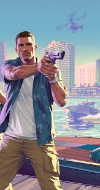
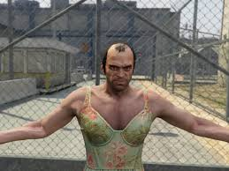

Jason Duval
Jason cresceu entre golpistas e vigaristas.
Após um período no exército tentando deixar sua adolescência conturbada para trás, ele se viu nas Keys usando o máximo das suas habilidades a serviço dos traficantes locais.
Talvez seja a hora de tentar algo novo.

Lucia Caminos
O pai da Lucia ensinou ela a lutar assim que ela aprendeu a andar.
A vida dela tem sido árdua desde então.
Foi lutando pela família que ela acabou na penitenciária de Leonida.
E ela saiu de lá por pura sorte.
Lucia aprendeu a lição, só agir com inteligência daqui em diante.
New

Carl "CJ" Johnson
Membro da gangue de rua Grove Street Families, Carl decidiu deixar Los Santos, sua cidade natal, em busca de uma vida melhor, mas a crescente violência em torno de seu antigo lar resulta no assassinato de sua mãe, fazendo com que CJ retorne para seu funeral.
Sua volta a Los Santos dispõe Carl a ter que lidar com conflitos entre gangues, confrontos com policiais e suas relações com sua família e amigos